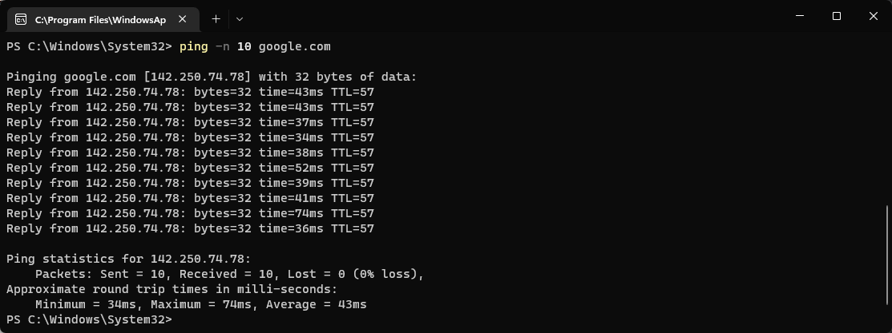
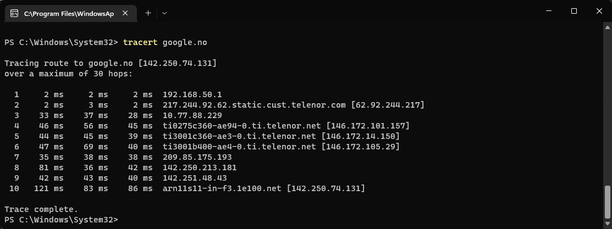
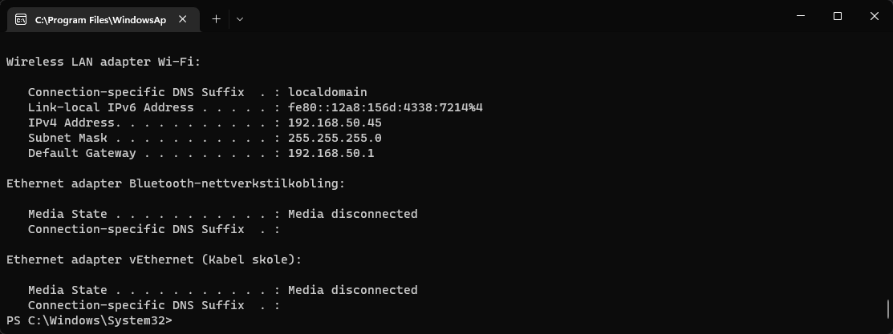
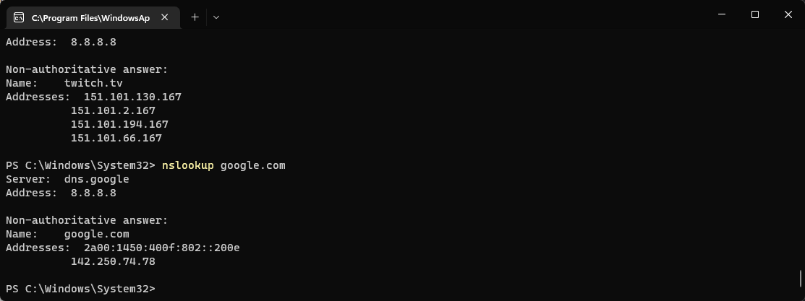
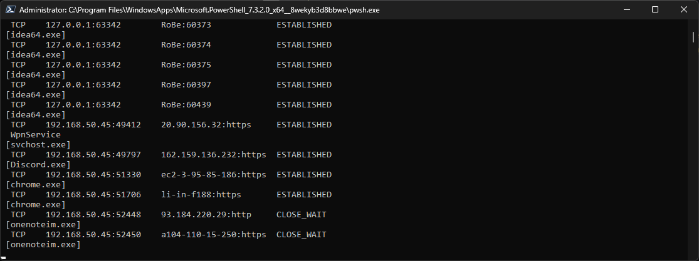
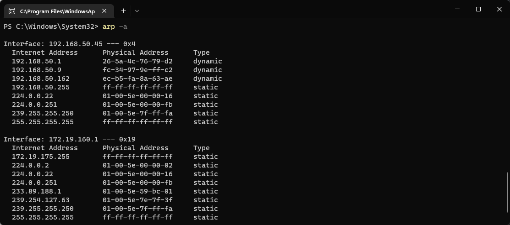
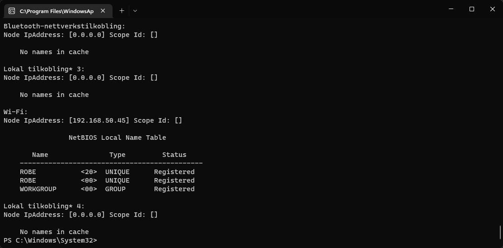

Network Commands (CMD & Powershell)
ping - Pinging
The ping command can be used to check your ping to any IP adress it is commonly used to check if your device has an internet connection. Use ping /? for more usages! 
tracert - Route Tracing
The tracert command is used to trace the route you take to get to your destination IP. It shows the adresses you go through to reach your destination / how many hops. Use tracert /? for more usages! 
ipconfig - View Network Configuration
Used to view your networks' configuration, you can find your devices IP adress, the networks default gateway, subnet mask and much more! Can also be used to release and renew your IP adress. Use ipconfig /? for more usages! 
nslookup - View IP' for a given host name
Used to look up the IP adresses of a given host name, can be used for more as well. Checkout Microsofts documentation for more! 
netsat - Display active connections
Used to display active TCP connections without added parameters, but can show much more like what ports your computer is listening to etc. common parameters include netstat -b, netstat -s, netstat-p for more see: Microsoft documentation or use netstat /? 
arp - Display and modify arp cache
arp is used to display and modify the arp cache it contains one or more tables used to store IP addresses, There is one table for each network adapter installed on your computer. You can delete specific entries with the arp -d command and add new entries with the arp -s command. For more see: Microsofts documentation 
route - Display and modify local IP routing table
The route command is used to display and edit the local IP routing table, use route print to
show your routing table. To add a new route use the route add command, to remove use route
delete. If you
want to change a route use the route change command. For more see: Microsoft
documentation

nbtstat - Display NetBIOS tables
nbtstat is used to display NetBIOS over TCP/IP, NetBIOS tables for both local and remote computers. For more see: Microsoft documentation. 